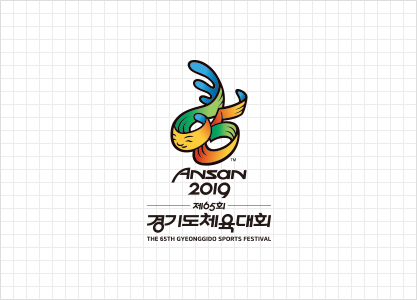
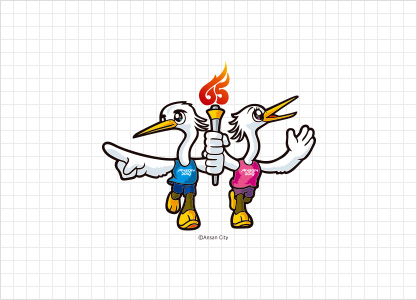

D-Day
1 2 3


엠블럼

BS02-01 Emblem Standard Portrait 3 Types
BS01 엠블럼 EMBLEM
65회째를 맞는 2019년 경기도체육대회를 상징하는 숫자 65를 안산시의 상징적 인물인 단원 김홍도 풍의 담백한 선으로 표현한 엠블럼. 단원의 굵고 힘찬 붓터치와 해악 넘치는 인물 표정을 가져왔으며, 안산시 상징색인 주황, 녹색, 청색을 사용하여 체육대회의 흥과 멋을 살리고자 했다. 굽이치는 옷고름 모양의 디자인은 단원의 춤추는 무동을 연상하게 하며, 시화호와 서해바다의 물결을 연상하게도 한다. 안산시의 상징적 인물인 단원과 안산시 상징색을 이용, 대회 개최지의 인상을 더욱 강하게 부각시켰다.
마스코트

BS02-02 Mascot Black and White
BS02 마스코트 MASCOT
- 안산시 시조인 노랑부리백로. 노랑부리백로의 머리장식 깃, 하얀몸체, 고동색 다리, 노랑 발 표현
- 두마리의 노랑부리백로 중 수컷의 손짓은 스포츠의 목표와 이상을 가리키며, 암컷의 제스쳐는 모두가 함께 하자는 참여와 단합을 전하는 의미가 있다. 이를 통하여 대회에 참가한 선수단 및 지역사회의 따뜻한 화합을 의미합니다.
- 성화는 65회 대회 상징, 운동복 가슴엔 대회 로고 명기.
경기도 안산시 단원구 화랑로 387 (고잔동)으로 변경
COPYRIGHT© 2019 ANSAN CITY HALL ALL Rights Reserved.